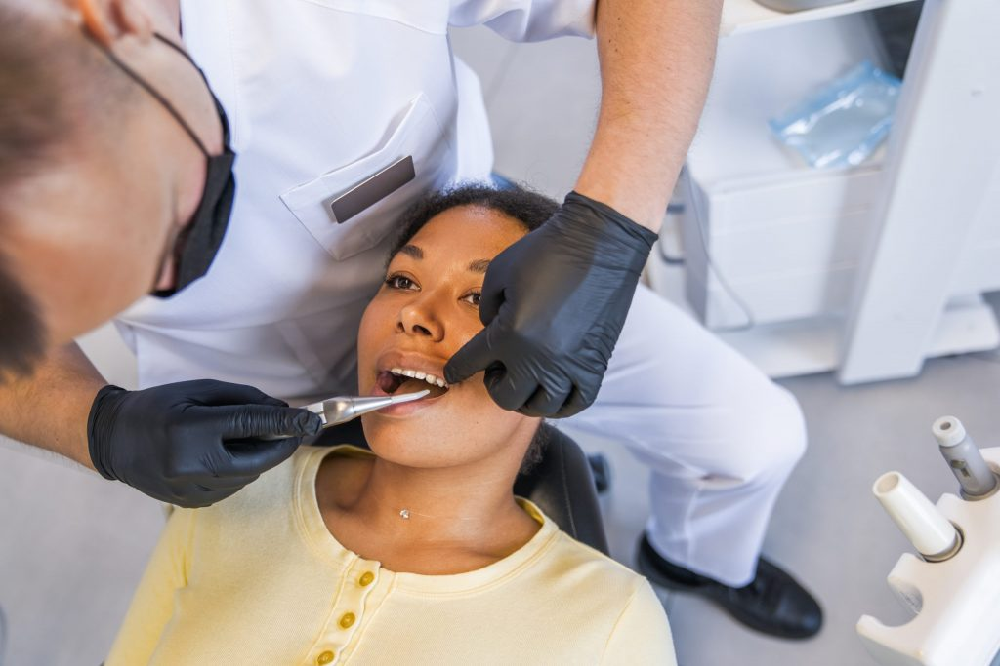

Teeth Cleaning
A routine procedure to remove plaque, tartar, and stains from teeth, promoting oral hygiene and a better appearance.
Click here to Book an AppointmentTeeth Whitening
Cosmetic treatment to lighten discolored teeth using bleaching agents, enhancing the smile's aesthetics.
Click here to Book an Appointment
Dental Implants
Restorative method to replace missing teeth with titanium posts and crowns for natural-looking and functional results.
Click here to Book an Appointment
Orthodontics
Specialized dentistry to correct teeth and jaw alignment using braces, aligners, or other appliances for improved oral health and aesthetics.
Click here to Book an Appointment

Root Canal Treatment
Procedure to save infected or decayed teeth by removing damaged pulp, cleaning the canals, and sealing them to prevent extraction.
Click here to Book an Appointment
Oral Surgery
Surgical interventions in the mouth and jaw, including extractions, wisdom teeth removal, dental implants, and corrective jaw surgeries.
Click here to Book an Appointment